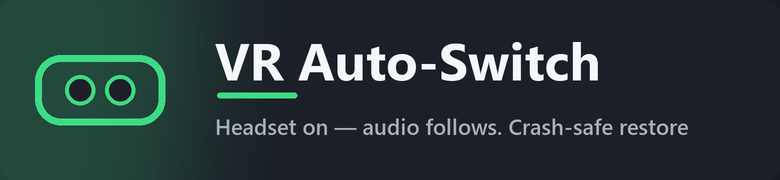
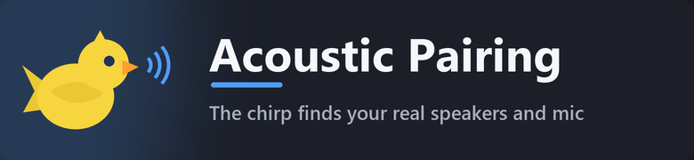
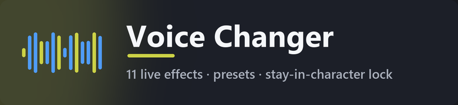
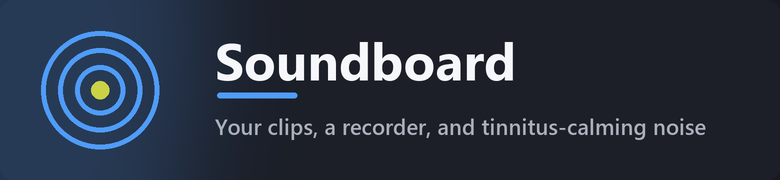

What it does
Five tools, one tray icon. Everything below ships in the free app.

VR auto-switch
Tag your headset's output and mic, and the app switches the moment SteamVR, Meta Link, Pico Connect, Virtual Desktop or WMR starts 𓅪 and restores your exact desktop setup when you exit, even after a crash. The tray menu counts every switch it makes for you.

Acoustic pairing
Not sure which mic is next to your speakers? One click plays a test chirp through every output while recording with every mic at once, then ranks both lists like a leaderboard 𓅪 real devices rise to the top, silent and virtual ones fade to grey.

Voice changer
Pitch, a masculine↔feminine voice-type slider, robot, phone, reverb, echo, a five-band EQ and one-click presets 𓅪 with a three-second preview and a Stay in Character lock so your real voice is never heard by accident.

Soundboard & masking noise
One-click sound buttons, a drag-and-drop library, a recorder with automatic loudness leveling 𓅪 plus looping white, pink or brown noise to calm tinnitus or mask distractions.
Scenes & hotkeys
Save output + mic combos as named scenes, assign VR and Default scenes, and switch with global Ctrl+Alt+1–9 hotkeys 𓅪 even while the panel is hidden.
See it in action
57 seconds, start to finish.
Screenshots
Speaks your language
English, 简体中文, Español (EU & Latam), 日本語, Русский, Português, Deutsch, Français, 한국어, Türkçe, ไทย, Svenska.
Get it free on Steam